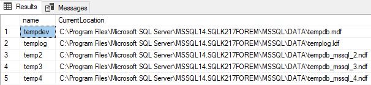
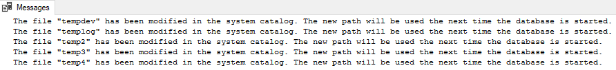
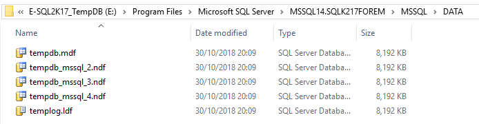
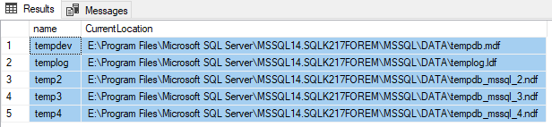
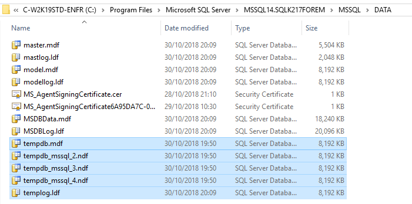

How to move SQL Server's TempDB to a different location
Introduction
Unless you request it to be in another location, TempDB is located by default on %SYSTEMDRIVE% (usually C: file system) during installation.
If you have more than one drive, you should locate SQL Server's TempDB on another drive than %SYSTEMDRIVE%, as well as your Sage X3 database. Having a drive dedicated to databases would be the best. In production systems, it is not recommended to have only one C: drive in your installation.
Here are the main reasons to move this database:
- C: drive may not be as performing as other drives.
- C: drive may not have enough available space for TempDB growth.
- For some types of AWS instances, you have short-lived SSD drives that are great for storing temporary files.
- It is a bad practice to put databases on the C: drive. Other standard SQL Server databases, such as Master or Model, should also not be on C: even though they don't grow in theory.
Microsoft's reference document
Applies to
- SQL Server 2012
- SQL Server 2014
- SQL Server 2016
- SQL Server 2017
Principles
As TempDB is rebuilt from scratch each time SQL Server instance is restarted, you don't have to move the data files by yourself.
You just have to specify where the data files should be at the next instance start. Then restart the instance and remove the old (now unused) data files.
Procedure to follow
1. Retrieve the characteristics of current TempDB data files (names, locations, etc…)
2. Change the specifications for the TempDB data files' names and locations that will be used during the next SQL Server instance start
3. Restart SQL Server instance
4. Check everything is OK
5. Finally remove the old data files that are now unused
1. Retrieve the characteristics of current TempDB
Run the following SQL script:
SELECT name, physical_name AS CurrentLocation
FROM sys.master_files
WHERE database_id = DB_ID(N'tempdb');
GOExample of a default configuration for an SQL 2017 instance named SQL2K17FOREM with four TempDB files:

2. Change the location TempDB files to a different drive with same directory hierarchy
In this example, the drive at the next SQL Server start will be E:\Program Files\Microsoft SQL Server\MSSQL14.SQLK217FOREM\MSSQL\DATA.
USE master;
GO
ALTER DATABASE tempdb
MODIFY FILE (NAME = tempdev, FILENAME = 'E:\Program Files\Microsoft SQL Server\MSSQL14.SQLK217FOREM\MSSQL\DATA\tempdb.mdf');
GO
ALTER DATABASE tempdb
MODIFY FILE (NAME = templog, FILENAME = 'E:\Program Files\Microsoft SQL Server\MSSQL14.SQLK217FOREM\MSSQL\DATA\templog.ldf');
GO
ALTER DATABASE tempdb
MODIFY FILE (NAME = temp2, FILENAME = 'E:\Program Files\Microsoft SQL Server\MSSQL14.SQLK217FOREM\MSSQL\DATA\tempdb_mssql_2.ndf');
GO
ALTER DATABASE tempdb
MODIFY FILE (NAME = temp3, FILENAME = 'E:\Program Files\Microsoft SQL Server\MSSQL14.SQLK217FOREM\MSSQL\DATA\tempdb_mssql_3.ndf');
GO
ALTER DATABASE tempdb
MODIFY FILE (NAME = temp4, FILENAME = 'E:\Program Files\Microsoft SQL Server\MSSQL14.SQLK217FOREM\MSSQL\DATA\tempdb_mssql_4.ndf');
GOResults:

3. Restart the database
You can restart the database with Windows Services management or SQL Server Management Studio.
4. Check the new settings
After the database is restarted, there are two ways you can verify that the new settings are taken into account:
- Looking in the directories where the new TempDB data files should be located

- Running the same SQL query as above to look at the current TempDB configuration
SELECT name, physical_name AS CurrentLocation
FROM sys.master_files
WHERE database_id = DB_ID(N'tempdb');
GO
5. Remove the old TempDB files from the original location
